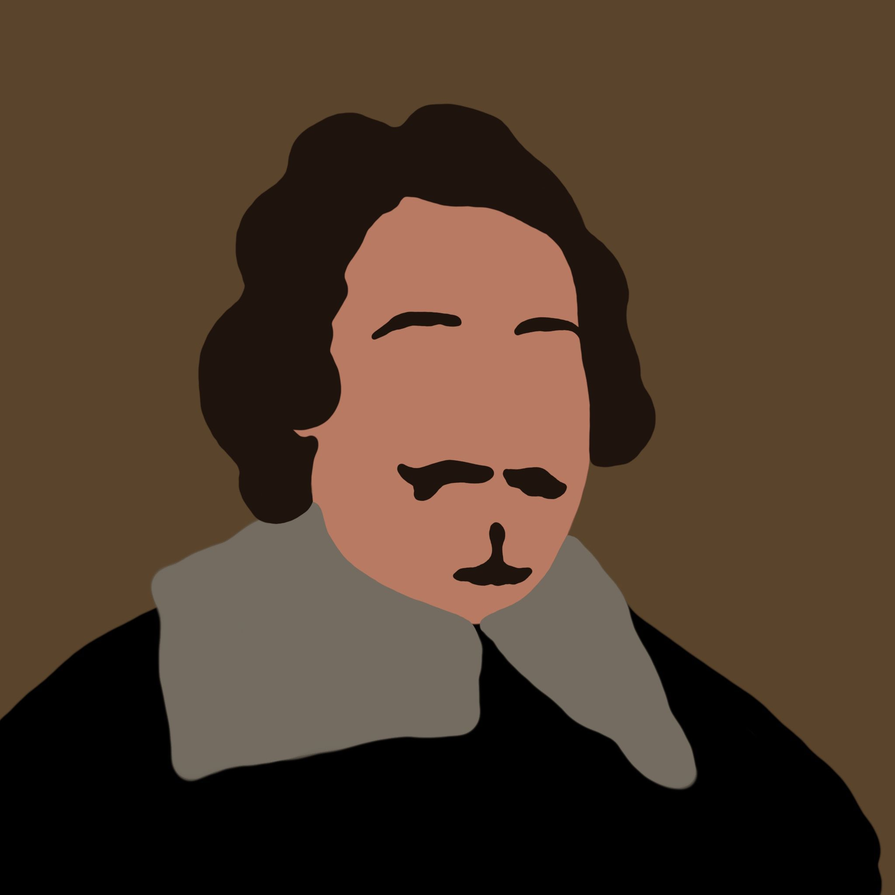
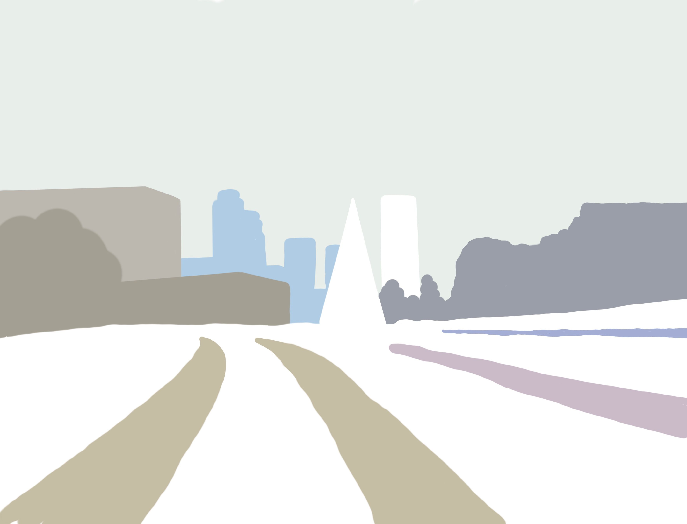
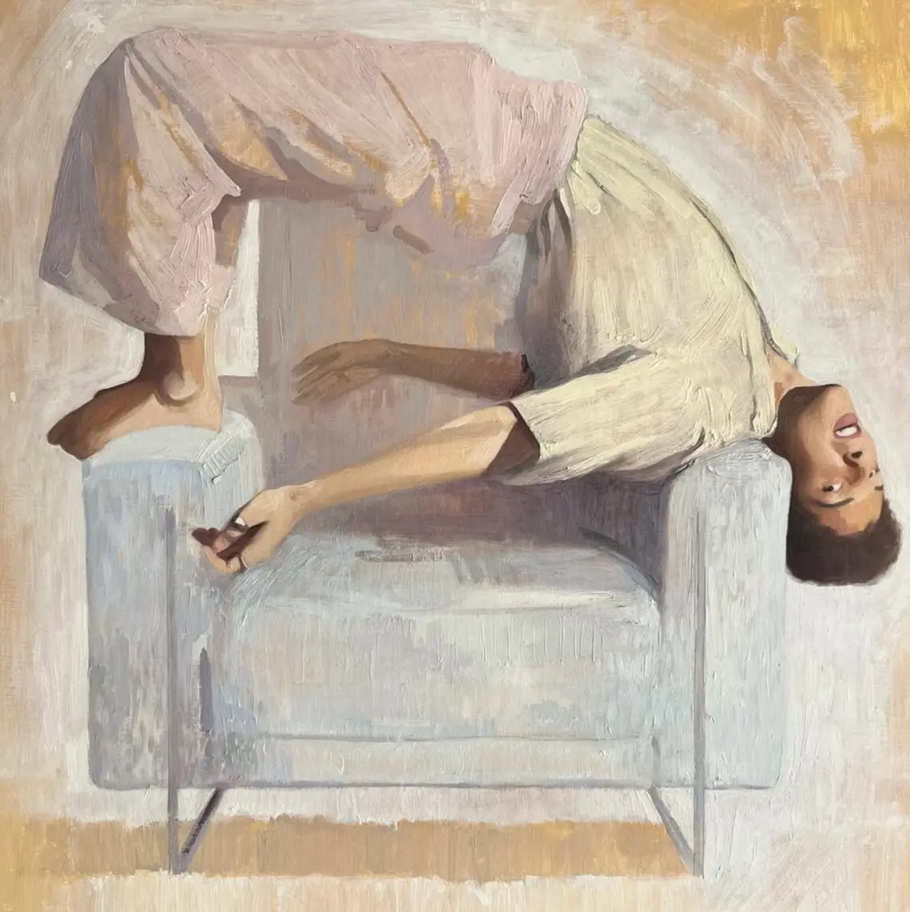
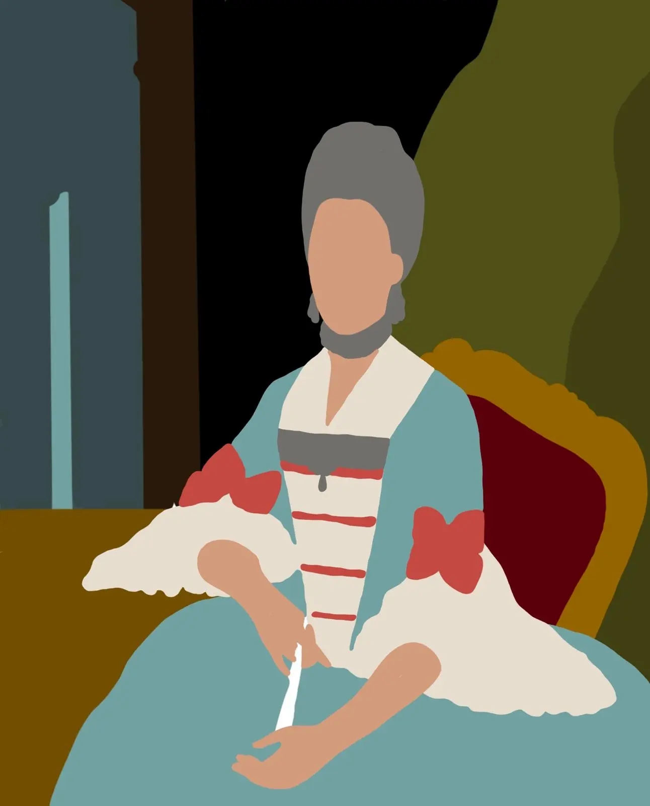
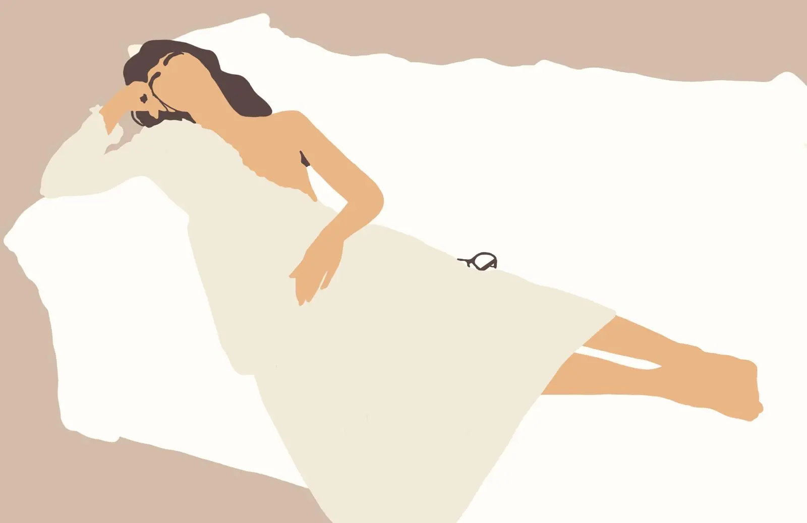
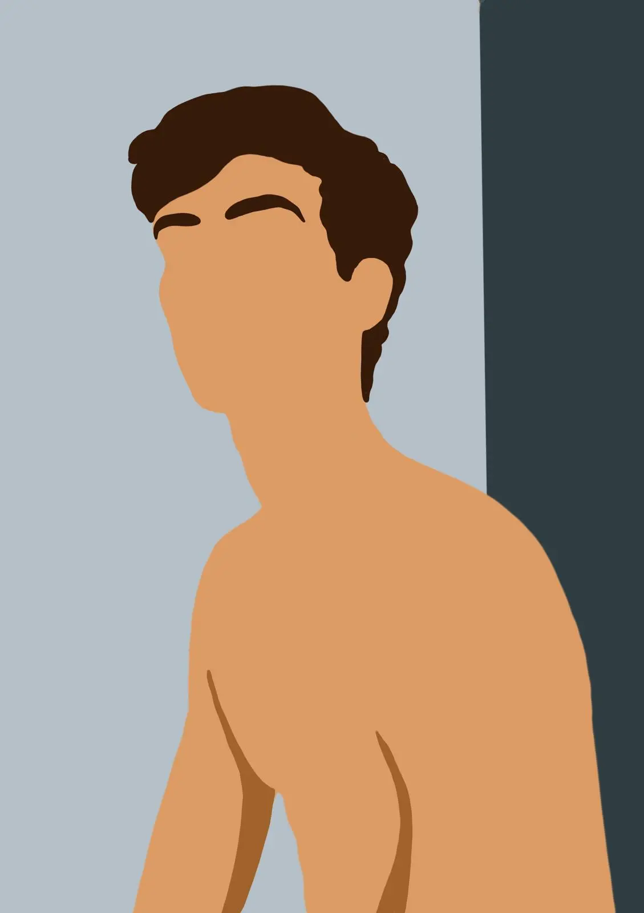

2025
2020
2021
2023
2024
2025
Anteriores
2025

Óleo sobre lienzoColección del artista" data-detail-story="Esta es la primera copia que pinté en el Museo del Prado y quizás por eso le tengo especial cariño. Yo empecé a copiar para copiar a Velázquez pero al ser uno de los principales atractivos del Prado, siempre hay mucha gente en sus salas. Para una primera copia esto me imponÃa mucho asà que busqué una obra menos conocida pero que fuera un buen ejemplo de la técnica del Velázquez maduro. Pintado el mismo año que el Inocencio X para mi este es uno de los mejores retratos de Velázquez y fue una masterclass que nunca olvidaré." />

Óleo sobre lienzoColección del artista" data-detail-story="Representé la Castellana durante Filomena utilizando una paleta de blancos, grises y azules frÃos para capturar la atmósfera helada. Trabajé con capas finas de óleo para reflejar la textura suave de la nieve. Me interesaba mostrar cómo la nevada transformó por completo el paisaje urbano habitual." tabindex="0" />

Colección del artista" data-detail-story="En este retrato me interesaba capturar la forma en que Pablo se mueve: su cuerpo alargado, flexible, siempre en tensión suave. Trabajé la anatomÃa con atención, buscando un equilibrio entre precisión y soltura en el trazo. La postura refleja su energÃa contenida, casi como si estuviera a punto de moverse fuera del lienzo." tabindex="0" />
Óleo sobre lienzoAyuntamiento de Gijón" data-popup-src="dist/images/Gijon_real.JPG.webp" data-detail-story="Josefa de Jovellanos fue una escritora gijonesa clave en las letras asturianas y en el desarrollo de la lengua asturiana. Con la intención de tenerla en el ayuntamiento representada junto a otras figuras locales ilustres (como su hermano Gaspar Melchor de Jovellanos) el Ayuntamiento de Gijón me encargó una copia del retrato que conservan las madres agustinas recoletas en el convento de Agustinas Recoletas de Gijón. Desde entonces se puede ver en la sala de plenos del ayuntamiento." tabindex="0" />

Colección del artista" data-detail-story="Quise retratar a Ascen en un momento de intimidad tranquila, tumbada en el sofá con una bata blanca que apenas roza su piel. Me interesaba transmitir su delicadeza natural y un erotismo sutil, sin forzarlo. La composición juega con las curvas del cuerpo y la caÃda suave de la tela, buscando una sensación de calma y sensualidad al mismo tiempo." tabindex="0" />
Colección del artista" data-detail-story="Este autorretrato lo pinté como un ejercicio de observación y sinceridad. No busqué idealizarme, sino entender cómo me veo y cómo me siento en ese momento. Trabajé con una luz neutra y pinceladas directas, dejando que la expresión surgiera casi sin forzarla." tabindex="0" />